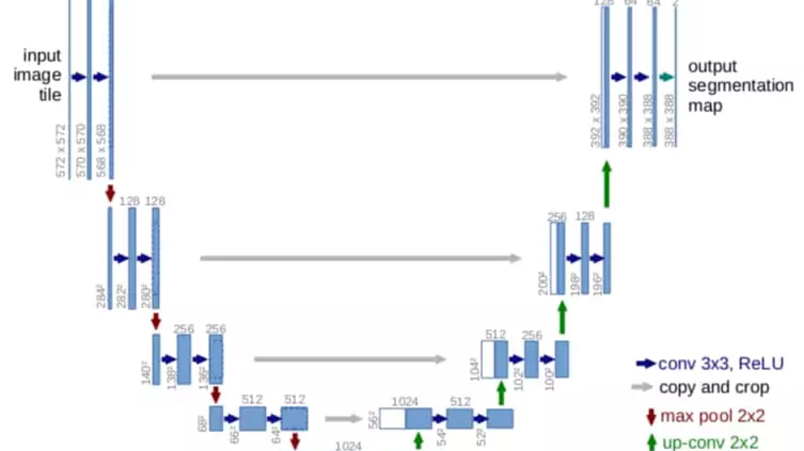
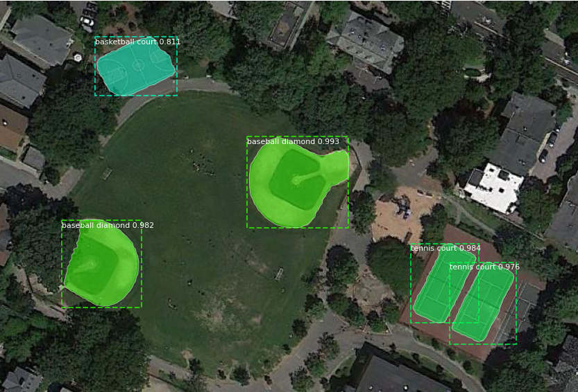
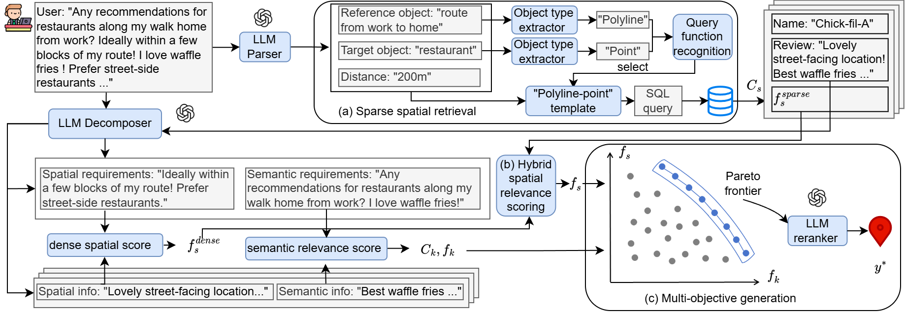
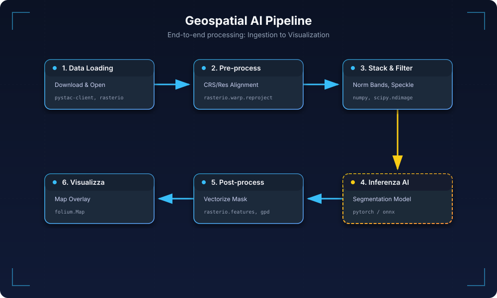

GeoAI Stack: da dove partire per diventare un GeoAI engineer?

Seconda puntata del nostro lungo cammino diventare GeoAI engineer. La scorsa volta abbiamo descritto molto in generale cosa fa un AI engineer e cosa lo differenzia.
Ora capiamo cosa serve ad un aspirante GeoAI engineer per iniziare, ovvero gli strumenti, i dataset e il setup necessario.
Panoramica architetturale dello Stack AI Geospaziale
Partiamo dall'obiettivo principale e teniamolo a mente.
Obiettivo: Integrare modelli di Linguaggio (LLM) e pipeline di Visione Geospaziale in un ambiente riproducibile, dal development locale alla produzione.
L'architettura tipica combina:
- Ingestione dati geospaziali: accesso a immagini satellitari ottiche (come per es. Sentinel-2) e radar SAR (come Sentinel-1) tramite cataloghi STAC/COG (Planetary Computer, Earth Data, ecc.). Ne parleremo bene dopo.
- Pre-processing e analisi remote sensing: pipeline Python per leggere, allineare e processare grandi raster (con rasterio/GDAL, rioxarray/dask per dati voluminosi) e vettori (con geopandas/shapely). Si producono features come mappe di danno, estensione di alluvioni, edifici estratti, ecc.
- Modelli di visione e geospaziali: applicazione di modelli di deep learning specializzati sui dati pre-processati. Per esempio IBM ha usato U-Net in una delle sue attività di ricerca per segmentazione di danni a post disastro naturale. Oppure, modelli derivati da SegFormer per fare change detection, come Open-CD.
Librerie come TorchGeo forniscono dataset e modelli pre-addestrati specifici geospaziali.

Figura 1 – Architettura U-Net con encoder/decoder e skip connection per segmentare danni e classi in immagini satellitari.
Figura 2 – TorchGeo raccoglie dataset pronti all'uso e modelli pre-addestrati pensati per scenari di computer vision geospaziale.Integrazione LLM/RAG: un modulo di Retrieval-Augmented Generation (RAG) collega i risultati geospaziali con un LLM (es. GPT-5 o Mistral Large) per consentire Q&A e reportistica. L'LLM può attingere a knowledge base aggiornate (documenti, descrizioni di luoghi) oltre che ai dati estratti. Ciò riduce il problema delle allucinazioni fornendo contesto verificabile. Ad esempio, un utente può chiedere "Quanti edifici sono stati distrutti dal terremoto in Turchia?" e il sistema usa i dati estratti dal modello CV + descrizioni testuali per generare una risposta citando fonti.
Agenti e automazione: componenti agent-based (costruiti con framework come LangChain, Haystack o Datapizza-AI) orchestrano i passi e le chiamate a determinati strumenti.
In particolare un agent può:- interrogare un database geospaziale per trovare immagini post-disastro rilevanti;
- eseguire il modello di computer vision per ottenere le metriche (numero edifici danneggiati, area alluvionata, ecc.);
- chiamare l'LLM per spiegare i risultati.
Questo consente workflow complessi "domanda -> azioni -> risposta" in modo modulare.
Servizi e deploy: il tutto viene containerizzato (Docker) e può essere esposto tramite API REST (ad es. con FastAPI) o interfacce grafiche leggere. Ad esempio, una dashboard Streamlit può mostrare mappe interattive con i layer di danno e offrire una chat LLM per domande sul disastro.
Architettura locale vs produzione
Quando si sviluppa la soluzione, è buona prassi lavorare su dataset di test (per esempio su poche scene satellitari rappresentative) usando notebook (come Jupyter Lab, Colab, ecc.) oppure script modulari (in src/).
In produzione invece, i singoli componenti vengono orchestrati in microservizi: può esserci un servizio per l'analisi geospaziale (es. calcolo di mappe di rischio) e un servizio per l'LLM (es. generazione risposte), con logging e monitoring. I dati grezzi in questo caso, come le immagini, risiedono in uno storage (o file system locale o bucket cloud), mentre i risultati intermedi, come i COG (Cloud Optimized GeoTIFF) generati, shapefile, embedding vettoriali, possono essere inseriti in cache per velocizzare le richieste ripetute.
Vorrei far notare che i modelli di linguaggio sono tipicamente usati via API esterne (OpenAI, etc.) o, nel caso di modelli open source ottimizzati (es. gemma3n 4B), l'inferenza avviene on-premise.
Come leggevo in questo paper, questa architettura ibrida AI + GIS supera i limiti dei singoli sistemi: quelli GIS classici faticano con input in linguaggio naturale, mentre "i Large Language Model mostrano forti capacità linguistiche ma faticano nel ragionamento spaziale e nel ground truth geospaziale". Combinandoli, otteniamo un sistema in cui i modelli visivi forniscono "occhi" e dati strutturati, e gli LLM forniscono "ragionamento linguistico" su tali dati, con la possibilità di consultare basi conoscitive real-time. In sintesi, lo stack abbraccia il ciclo completo: Data (Geo) → AI Vision → Knowledge → LLM. La figura seguente illustra i componenti chiave e il flusso di dati nel sistema (dalla raccolta dati alla risposta all'utente):

Figura 3 – Schema riassuntivo dello stack GeoAI che collega ingestion e analisi geospaziale, modelli CV, componenti RAG/LLM e servizi di deployment orchestrati da agenti.
Mappa di Strumenti e Risorse (2025)
In questo capitolo vediamo insieme le principali opzioni per ciascun aspetto dello stack: dalla gestione ambiente Python, agli strumenti di sviluppo, passando per le basi sui container, i dataset geospaziali open e le librerie chiave. L'obiettivo non sarà solo conoscere tutto questo, ma anche avere in mente un confronto delle caratteristiche, esponendo i vantaggi di ciascun metodo.
Gestione Ambiente Python (venv, conda, poetry, ecc.)
Una cosa su cui siamo tutti d'accordo: per avere una base solida è necessario un ambiente Python riproducibile con tutte le dipendenze inclusi pacchetti per GPU e le librerie geospaziali.
La tabella seguente confronta gli approcci più diffusi oggi (nel 2025):
| Approccio | Tipo | Vantaggi (pro) | Svantaggi (contro) | Aggiornamento |
|---|---|---|---|---|
| pip + venv | Installer + env isolato | Semplice e nativo; velocità nell'installazione diretta | Risolutore non più greedy ma comunque meno potente di solver SAT; no lockfile nativo; richiede rimozione manuale sub-deps non usati | pip 25.3 (2025) |
| conda / mamba | Gestore pacchetti con solver SAT C++ | Gestisce librerie non-Python (es. GDAL, PROJ) in env isolati; risoluzione completa e veloce grazie al solver libmamba | Ambiente base pesante (hundreds MB); manca lockfile out-of-the-box; a volte necessità di mix pip→ possibili conflitti | Conda 25.9.1 (2025) |
| Poetry | Gestore PyPI con lockfile | Usa standard pyproject.toml unificato; genera lockfile multi-piattaforma per riproducibilità; gestisce env virtuale automaticamente | Risolutore in Python relativamente lento su grandi req. (DFS backtracking); lockfile voluminoso; attenzione a vincoli eccessivi (^version) che possono causare conflitti in team ampi. | Poetry 2.1 (2025) |
| PDM / Hatch | Gestori moderni PyPI | PDM supporta PEP 582 (ambiente locale senza activate); Hatch funge anche da build system completo e consente test multi-versione Python | Meno diffusi della triade pip/conda/poetry; Hatch ha curva apprendimento più alta e focus packaging (non solo env) | PDM 2.26 (2025), Hatch 1.15 (2025) |
| uv (Astral) | Tool unificato all-in-one (Rust) | Estremamente veloce (10-100× pip) grazie a core in Rust; rimpiazza pip, pipx, poetry, pyenv con un solo strumento; supporto lockfile universale e workspace multi-progetto; integrazione trasparente con venv esistenti (puoi attivare uv, poi usare pip normale se vuoi) | API e CLI ancora instabili (progetto giovane); community emergente | uv 0.9.9 (2025) |
| pixi (prefix.dev) | Package manager conda-like (Rust) | Velocità |
Ecosistema nuovo (rilasci <1 anno); meno pacchetti precompilati rispetto a conda-forge; alcuni comandi sono ancora in evoluzione | pixi 0.59 (2025) |
| pyenv | Gestore versioni Python | Permette installare e switchare versioni Python diverse facilmente per progetto (utile per test multi-versione o legacy) | Non gestisce i pacchetti; usato in combinazione con venv/poetry; se usato global può creare confusione su versioni attive | pyenv 2.6.12 (2025) |
Tabelle note: mamba è l'implementazione in C++ di conda. Oggi conda stesso incorpora libmamba di default, quindi i due convergono in velocità. In ambienti data science, conda/mamba rimane popolare per facilità con pacchetti scientifici complicati, mentre in produzione spesso si preferisce pip/poetry per evitare dipendenze extra e avere più controllo. Strumenti emergenti come uv e pixi mirano a unificare il meglio dei due mondi (velocità e completezza). Ad esempio, uv è sviluppato in Rust dai creatori di Ruff e punta a diventare il "Cargo per Python" (un unico tool per gestire versioni Python, dipendenze, virtualenv, publishing). Pixi, creato dal team di mamba, è un sostituto drop-in di conda scritto in Rust: utilizza uv per risolvere pacchetti pip, genera lockfile e rimuove la necessità di un base environment conda, migliorando drasticamente la velocità e l'ergonomia per portare env conda in produzione.
Reproducibilità GPU/Geo
Per un progetto AI/RS su GPU in locale, conda offre spesso la via più semplice (es. conda install pytorch cudatoolkit gdal rasterio in un env) perché gestisce i "binary" compatibili (CUDA, GDAL). In alternativa, in ambienti containerizzati, si può optare per pip + Docker usando immagini base con driver appropriati (ne parleremo tra un attimo).
In tutti i casi, è consigliato fissare le versioni in un lockfile (per esempio usando poetry.lock) o file requirements con hash, e documentare il setup (ad es. fornendo un environment.yml conda + requirements.txt pip per sicurezza).
Un layout ideale del progetto prevede una struttura simile a:
proj-root/
├── src/ # codice applicativo (package principale)
├── notebooks/ # Jupyter notebook di esplorazione
├── data/ # dati grezzi o di esempio (gitignored se grandi)
├── models/ # modelli salvati o pesi
├── tests/ # test unità/integrati
├── configs/ # config per Hydra/pydantic (es. dev.yaml, prod.yaml)
├── Dockerfile # definizione container
├── pyproject.toml # specifiche package/dep (poetry/pdm)
├── requirements.txt # dipendenze (se pip)
├── Makefile # comandi utili (setup, run, lint, test, deploy)
└── README.md # documentazione progettoQuesta organizzazione segue in parte il modello Cookiecutter Data Science (per separare chiaramente code, data, docs) e facilita il passaggio dallo sviluppo locale alla produzione: il codice è impacchettato (in src/ con eventuale _init_.py), i test assicurano funzionamento, e config/secrets separati per ambiente permettono deploy consistenti.
Diciamo che è una buona prassi, non costa nulla e ti fornisce un ordine che è utile sia a te che a chi lavora con te.
Tooling Essenziale da AI Engineer
Per garantire qualità del codice e velocità di sviluppo, ogni sviluppatore adotta una serie di strumenti DevOps/MLOps leggeri che vediamo tra un attimo.
Prima di dare dei consigli a riguardo do delle definizioni che per alcuni sono scontate ma per altri magari no.
Il linting è un controllo automatico del codice sorgente alla ricerca di:
- errori potenziali: variabili non usate, sintassi sospetta, bug comuni
- problemi di stile: formattazione, nomi incoerenti, convenzioni non rispettate. “code smell”: pattern che non sono errori, ma possono creare problemi dopo In pratica vengono analizzati i file senza eseguirli e segnalati i punti da sistemare, spesso con suggerimenti o correzioni automatiche.
- Linting & Format: Black per il formato automatico del codice (opinionated, PEP8) e Ruff per il linting ultrarapido in Rust. Ruff include centinaia di regole (rimpiazza flake8, isort, ecc.) ed esegue fix di molti problemi in automatico. Ha praticamente soppiantato i linters tradizionali in poco tempo grazie alla velocità e copertura.
Consiglio di configurare Black e Ruff per non sovrapporre regole (es. disattivare in Ruff le regole che Black già sistema, come lunghezza riga) - ciò si può fare centralizzando la configurazione in pyproject.toml.
- Type Checking: utilizzare la tipizzazione statica per prevenire bug. Mypy è lo standard per type-checking in Python; in alternativa Pyright (integrato in VSCode/Pylance) offre analisi incrementale molto veloce durante la scrittura. Impostare un livello "strict" (es.
warn_unused_configs,disallow_untyped_defsin mypy) aiuta a mantenere il codice robusto. - Testing: Pytest è de facto per test unitari e funzionali in Python. Organizzare i test in tests/ e magari usare plugin utili: ad es. pytest-snapshot (o Syrupy) per snapshot testing di output complessi (confronta automaticamente output attuale con uno salvato in precedenza). Questo può essere comodo per validare ad es. JSON di risposta API o risultati di analisi raster. Per pipeline geospaziali, potrebbe essere utile generare piccoli dataset sintetici per testare le funzioni (es. creare un raster 100x100 e una geometria nota e verificare che l'overlay produca risultati attesi).
- Pre-commit hooks: configurare pre-commit (file
.pre-commit-config.yaml) per eseguire automaticamente tool di qualità prima di ogni commit. Un set raccomandato di hook: black, ruff, mypy, isort (se non uso ruff per sorting import), end-of-file-fixer e trailing-whitespace (semplici pulizie), eventualmente nbstripout o nbqa per normalizzare i notebook. Questo garantisce che ogni commit aderisca agli standard di code style e passa i test statici. Ad esempio, un hook ruff/black combinato rende il codice consistente - uno sviluppatore nota "Ruff + Black + isort configurati insieme forniscono qualità senza frizioni" in CI e editor. - CI/CD minimo: impostare una GitHub Action semplice che su ogni push esegue: lint (ruff/black), type-check (mypy) e test (pytest) su una matrice di ambienti (almeno Python 3.x). Ciò automatizza il controllo qualità. Per progetti di ML, si può includere un test su sample data (es. eseguire inferenza su un'immagine piccola) per assicurare che pipeline e modelli funzionino. Un workflow YAML minimo includerebbe step per installare dipendenze (usando poetry/mamba per velocità in CI) e poi
pre-commit run --all-filesseguito dapytest. - Notebook e collaborazione: usare JupyterLab 4 (moderno, supporta plugin e realtime collaboration) o l'interfaccia notebook di VSCode per prototipazione. In contesti condivisi o cloud: Deepnote, Google Colab o JupyterHub offrono ambienti pronti (Colab ad esempio fornisce GPU free limitate). È buona prassi mantenere sincronizzati notebook e codice: si può usare Jupytext (notebook come script paired) per versionarli facilmente. Per visualizzare dati geospaziali nei notebook, strumenti come folium (mappe interattive Leaflet) o ipyleaflet/leafmap permettono di visualizzare tiles, shapefile e risultati di modelli direttamente (questo verrà approfondito tra un paio di sezioni).
Consiglio: configurare tutti questi strumenti fin dall'inizio. Ad esempio, aggiungere al pyproject.toml: black, ruff, isort, mypy con config coerente (stessa line-length, ecc.). Installare pre-commit e attivarlo (pre-commit install) in modo che ogni git commit lanci i controlli. Queste automazioni rendono lo sviluppo "no drama": il dev può concentrarsi sulla logica AI/Geo, mentre gli strumenti mantengono il codice pulito e funzionante.
Ha senso tutto questo oggi con l'AI?
Negli ultimi anni l'introduzione dell'AI negli strumenti di sviluppo ha rivoluzionato il modo in cui scriviamo, manteniamo e versioniamo il codice. Eppure, questa rivoluzione non ha eliminato la necessità di buone pratiche: ha semplicemente spostato il baricentro di ciò che conta davvero. L'AI accelera, suggerisce, genera, ma non garantisce qualità e coerenza strutturale. Per questo, molti degli strumenti classici non solo restano rilevanti, ma in alcuni casi diventano più importanti di prima.
Iniziamo da linting e formattazione. Non è più una questione di estetica, ma di avere più sostanza.
Formatter come Black rimangono imprescindibili. Anche se l'AI produce codice già leggibile, un formato coerente è essenziale per avere diff puliti e review senza frizioni.
Quanto ai linters, strumenti come Ruff diventano fondamentali non per la parte estetica (che l'AI già gestisce bene), ma per intercettare errori, import inutilizzati, codice morto o pattern rischiosi. L'obiettivo non è rendere il codice "più bello", ma evitare bug introdotti da generazioni un po' troppo ottimistiche.
Passiamo ai guardrails introdotti dal type checking.
Con l'AI che propone codice complesso o funzioni plausibili ma non sempre corrette, strumenti come Mypy o Pyright diventano essenziali come rete di sicurezza. La tipizzazione statica non è solo una misura di qualità, ma una guida strutturale che l'AI stessa utilizza per generare soluzioni più precise. In particolare, nei moduli core di un progetto, un profilo di type checking semi-strict riduce enormemente il rischio di errori silenziosi (intendo errori che non si vedono per ora, ma emergono poi).
Ora analizziamo il punto, secondo me più importante, il testing.
Con test ben strutturati e snapshot test per output complessi, è possibile controllare che ottimizzazioni o refactor guidati dall’AI non modifichino comportamenti, diciamo, delicati.
Siamo quasi arrivati in fondo, ora tocca al precommit, quello che io definisco la sentinella tra noi e git.
Gli hook di pre-commit continuano a essere utili come ultimo filtro prima di far entrare codice su Git (con Git qui unifico Github e Gitlab).
Black, Ruff e alcune pulizie leggere come rimozione di whitespace sono spesso sufficienti. Altri tool più pesanti, come Mypy, possono rimanere in CI per evitare rallentamenti locali. In progetti personali si può anche farne a meno, ma in team resta un meccanismo che evita piccoli errori inutili.
Infine per indipendenza e riproducibilità resta il classico CI/CD
Con l’AI che facilita generazioni di blocchi di codice interi, cresce la probabilità di modifiche involontariamente distruttive. Una pipeline CI minima, quindi linting, type checking e test, garantisce che ogni push sia valido in un ambiente pulito e controllato.
Questo è un passaggio fondamentale per evitare che il codice generato dall'AI rompa funzioni a distanza o introduca regressioni difficili da individuare.
In conclusione, in un mondo in cui l’AI supporta lo sviluppo, gli strumenti di "safety del codice" non spariscono: si riposizionano. Black standardizza, Ruff protegge, Mypy o Pyright guidano, Pytest garantisce stabilità, la CI assicura riproducibilità.
Quindi l’AI non elimina la necessità di queste pratiche. Anzi, le rende ancora più rilevanti perché aumenta il volume e la velocità del codice prodotto.
La qualità non è più solo questione di scrittura, ma di ecosistema. E in questo ecosistema, l’AI è un acceleratore potente, ma non un sostituto!
Docker e Containerizzazione AI+GEO
Questa è una parte che mi sta molto a cuore (tanto da voler spendere una serie intera su Docker).
Containerizzare l'app consente di uniformare l'ambiente di sviluppo (specialmente per librerie native e driver GPU) e facilitare quindi la fase di deploy. Presentiamo due esempi di Dockerfile ottimizzati, uno per un servizio LLM/RAG leggero, l'altro per una pipeline geospaziale pesante, e una tabella di immagini base consigliate.
Esempio 1: Dockerfile per servizio LLM/RAG + FastAPI (CPU)
# Usiamo la versione di Python leggera con Debian 12 "bookworm"
FROM python:3.12-slim-bookworm as base
# Aggiorniamo e installiamo solo git, senza raccomandati, quindi puliamo la cache
RUN apt-get update \
&& apt-get install -y --no-install-recommends git \
&& rm -rf /var/lib/apt/lists/*
# Creiamo un utente non‑root per eseguire il servizio
RUN useradd -m appuser
# Impostiamo la cartella di lavoro
WORKDIR /app
# Installiamo una versione stabile di Poetry e configuriamo l’installazione dei pacchetti
RUN pip install --no-cache-dir poetry==1.8.2
# Copiamo i file di progetto e sfruttiamo la cache Docker per velocizzare gli aggiornamenti
COPY pyproject.toml poetry.lock ./
# Installiamo le dipendenze (solo di produzione) direttamente nel global site‑packages
RUN poetry config virtualenvs.create false \
&& poetry install --no-dev
# Copiamo il codice applicativo
COPY src/ ./src/
COPY main.py ./
# Eseguiamo come utente non root
USER appuser
# Avviamo Uvicorn esponendo la FastAPI all’esterno
CMD ["uvicorn", "main:app", "--host", "0.0.0.0", "--port", "8000"]
Note: Qui usiamo python:3.12-slim (~50MB) perché è un buon compromesso tra dimensione e funzionalità, dato che evita i problemi derivanti dall’uso di Alpine. Ho deciso di proporvi la versione 3.12 per la massima compatibilità con le altre librerie.
L'installazione delle dipendenze è fatta in un layer separato copiando solo pyproject/lock (per sfruttare la cache Docker: se solo il codice cambia e non le deps, non si reinstallano tutti i pacchetti).
Uvicorn serve l'app FastAPI. Questo container è CPU-only (adatto a LLM via API esterna o modelli piccoli). Se volessimo includere un modello locale (es. Transformers), basterebbe aggiungere RUN pip install transformers o includerlo direttamente in poetry.
Esempio 2: Dockerfile per pipeline geospaziale (con GDAL, opzionale GPU)
Vediamo ora un esempio più comlesso ma anche più adeguato ad un GeoAI engineer.
Per pipeline geospaziali complesse (analisi raster, fotogrammetria, deep learning su immagini satellitari) è necessario un ambiente con molte librerie native (GDAL, PROJ, Rasterio) e spesso il supporto GPU.
# Stage 1 – builder con Miniconda e mamba
FROM continuumio/miniconda3:latest as builder
# L'ultima versione di mamba è la 2.3.3. Poi eliminiamo i file temporanei
RUN conda install -n base -c conda-forge mamba==2.3.3 \
&& conda clean -afy
# Copiamo l’environment che elenchiamo i pacchetti geospaziali (Python 3.12, GDAL,
# Rasterio, Geopandas, ecc.)
COPY environment.yaml /tmp/environment.yaml
# Aggiorniamo l’ambiente base con le librerie specificate in environment.yaml
RUN mamba env update -n base -f /tmp/environment.yaml \
&& conda clean -afy
# Installiamo pacchetti aggiuntivi con pip (ad esempio Raster Vision)
RUN pip install --no-cache-dir rastervision==0.31.2
# Stage 2 – immagine di produzione con supporto CUDA 13.0.2
FROM nvidia/cuda:13.0.2-runtime-ubuntu22.04 AS production
# Copiamo l’installazione conda dal builder
COPY --from=builder /opt/conda /opt/conda
# Aggiorniamo la variabile PATH per includere conda
ENV PATH="/opt/conda/bin:$PATH"
# Impostiamo la directory di lavoro
WORKDIR /app
# Copiamo il codice sorgente
COPY src/ ./src/
COPY entrypoint.py ./
# Comando di avvio della pipeline
CMD ["python", "entrypoint.py"]
Come file di environment.yaml si può usare:
name: geoenv
channels:
- conda-forge
dependencies:
- python=3.12
- gdal=3.12 # GDAL 3.12 è disponibile tramite i container OSGeo
- rasterio
- geopandas
- numpy
- pandas
- pyproj
- pip
- pip:
- rastervision==0.31.2
- torch==2.7.0Abbiamo considerato qui un esempio preso da una fonte da cui, ai tempi, anche io ho studiato. L'ho cercata di aggiornare in base alle versioni delle librerie aggiornate alla data di questo articolo.
In questo Dockerfile multi-stage, usiamo come builder l'immagine Miniconda con mamba per risolvere le dipendenze (in environment.yaml specifichiamo ad es: gdal, rasterio, geopandas, pytorch, ecc. con canale conda-forge). Questo approccio gestisce automaticamente librerie native (GEOS, PROJ, etc.) evitando errori di pip (es. pip install gdal fallirebbe senza GDAL dev installato).
Nella seconda parte, partiamo da un runtime CUDA nvidia molto sottile, che include solo i driver necessari per PyTorch Tensor GPU.
Copiamo l'installazione conda dal builder, evitando di portarsi dietro i layer di compilazione. Il risultato è un'immagine pronta con supporto GPU e libs geospaziali.
Di seguito una tabella di immagini base comuni per vari scenari:
| Immagine base | Contenuto | Uso consigliato |
|---|---|---|
| python:3.12-slim | Debian slim + Python 3.x | Servizi Python leggeri (API, agent) - minima (<50MB) |
| continuumio/miniconda3 | Miniconda + conda (base env) | Data science/Geo completo; facile installare pacchetti complessi (es. GDAL) |
| mambaorg/micromamba | Micromamba in Alpine/CentOS | Costruire immagini con env conda in maniera snella; ideale in multi-stage (scarica solo i pacchetti richiesti) |
| nvidia/cuda:13.0.2-runtime-ubuntu22.04 | Librerie CUDA + runtime base | Aggiungere supporto GPU. Da usare con pip/conda per installare PyTorch/TF con CUDA compatibile. Considerate che siamo alla versione 13.0.2 ora |
| pytorch/pytorch:2.7.0-cuda12.8-cudnn8-devel-ubuntu20.04 | Python + PyTorch 2.0 + CUDA preinstallati | Lavori di training/inference DL su GPU - evita configurazioni manuali di CUDA/cuDNN. Include però anche varie libs (immagine ~>10GB). |
| ghcr.io/osgeo/gdal:ubuntu-full-3.12.0 | Ubuntu + GDAL precompilato (full drivers) | Pipeline GIS/RS intensive. |
| jupyter/scipy-notebook | Python con Jupyter Notebook + stack SciPy | Ambienti notebook pronti all'uso (CPU). Include numpy, pandas, matplotlib, etc. Utile per sviluppo interattivo, anche su cloud (ad es. Docker Stacks di JupyterHub). |
Non escludo che ci siano
Gestione GPU
In deployment on-prem, abilitare runtime GPU con --gpus all su Docker run (usando i runtime NVIDIA). In Kubernetes, usare device plugins NVIDIA. Se l'host non ha GPU, basterà che l'immagine contenga comunque le librerie giuste e potremo eseguire in CPU senza errori, o delegare a Colab per esecuzione GPU.
Gestione di "password" e configurazioni
La parola AI oggi, spesso chiama la parola API, e di cnseguenza anche credenziali (o config) per servizi (es. token Mapbox, key OpenAI, URL database). È fondamentale non inserire questi valori nel codice sorgente, ma usare sistemi di config.
Approccio .env (locale)
L'approccio più semplice e funzionale è sicuramente passare per il classico file .env, ovvero mettere le chiavi in un file .env escluso dai comandi git, e caricarlo poi con python-dotenv.
Ad esempio il file config.py potrebbe essere scritto come:
from pydantic import BaseSettings
class Settings(BaseSettings):
openai_api_key: str
db_url: str
debug: bool = False
class Config:
env_file = ".env" # legge le variabili da .env
env_prefix = "MYAPP_" # opzionale: prefisso richiesto nelle env var
settings = Settings()Questo codice usa Pydantic BaseSettings. Usando questo codice, ad ogni avvio, l'applicazione leggerebbe le variabili d'ambiente (o dal file .env) e costruirebbe un oggetto settings.
Questo offre il vantaggio della validazione dei tipi (ad es. se db_url deve essere una URL, Pydantic può validarla). Si possono definire default e Pydantic converte automaticamente tipi (int, bool ecc) e gestisce configurazioni innestate. Pydantic è ottimo quando "la struttura di configurazione è relativamente semplice e basata su env var/.env", ovvero con pochi parametri principali.
Inoltre, integrandolo con FastAPI, le impostazioni possono essere utilizzate come dipendenze.
Approccio file YAML/INI + altre classi
In progetti più grandi o con molte configurazioni, usare file YAML o TOML per ambienti diversi può risultare organizzato. Ad esempio, uno schema:
config/
|_default.yaml
|_dev.yaml
|_prod.yamlLibrerie come Dynaconf supportano la configurazione multi layer caricando più file e unendoli in base ad una chiave di ambiente.
Dynaconf permette definire config in diversi formati (YAML, TOML, Python) e distingue contesti development vs production, oltre a supportare secrets criptati. È indicato quando "servono configurazioni complesse, multi-sorgente e con separazione netta tra ambienti".
Alternativamente, Hydra (di Facebook) permette di comporre configurazioni da file modulari e sovrascriverle via CLI. Hydra è comune in contesti di ricerca per gestire molti parametri (es. architettura modelli, hyperparam) e variare esperimenti semplicemente lanciando. Hydra crea automaticamente directory di output versionate con la config usata.
Consigli pratici config: Se l'app è relativamente semplice (pochi parametri e segreti), Pydantic BaseSettings offre semplicità e robustezza (type-safe). Se cresce in complessità (es. decine di voci, più file), Dynaconf potrebbe essere utile per evitare boilerplate e gestire più sorgenti. Hydra è ottima se prevedi di fare molte variazioni di run (tipico nel training di modelli ML), ma per un servizio web forse è overkill.
Gestione secret in produzione
Mai fare il commit delle credenziali. In ambienti cloud, utilizzare servizi dedicati: AWS Secrets Manager, GCP Secret Manager, Hashicorp Vault.
Ad esempio, su AWS si può memorizzare la OPENAI_API_KEY e recuperarla dinamicamente nel container ECS oppure inserirla come variabile d'ambiente tramite il sistema di configurazione (come Terraform).
Molti servizi CI/CD (GitHub Actions, GitLab CI) offrono un vault integrato per salvare secret e renderli disponibili come env var durante il deploy. Quindi, il pattern consigliato è: in locale .env, in CI/prod env var o config criptata.
In sintesi, investire tempo in una solida gestione di config/secret garantisce che l'app possa passare da dev a prod senza modifiche manuali al codice, minimizzando rischi di leak (niente chiavi in repository mi raccomando).
Dataset Open e Cataloghi STAC/COG per Disastri
Prima di far vedere i dataset vorrei chiarire alcuni punti e dare un paio di definizioni:
“Chip” = ritaglio/tessera (“patch/tile”) estratta da una scena satellitare grande. In pratica: invece di usare un’intera immagine satellitare, la si spezza in tanti quadrati più piccoli, ognuno usato come esempio di training. Poi per maggiori info sui satelliti, ti rimando all'articolo Che dati registrano i satelliti?, in cui ho fatto un bell'approfondimento sulle tipologie di dati satellitari.
Per progetti di Disaster Intelligence, attingere a dataset open aggiornati è cruciale. Fortunatamente tra 2022-2025 sono aumentati i cataloghi STAC (SpatioTemporal Asset Catalog) e dataset specializzati. Ecco una selezione dei dataset e risorse state-of-the-art:
| Dataset / Catalog | Dati (tipo e risoluzione) | Copertura/Dimensione | Task / Utilizzo | Fonte (link) |
|---|---|---|---|---|
| xBD / xView2 (2019) | Immagini satellitari Maxar pre- e post-evento (RGB, ~0.3 m/px, tile 1024×1024); annotazioni edifici + classe danno | 19 eventi di 5 tipi diversi (terremoti, uragani, incendi); 850k edifici annotati su ~45k km²; 9k coppie immagine pre/post per training | Building Damage Assessment - segmentazione edifici e classificazione danno (nessuno, leggero, moderato, pesante, distrutto) | DIU xView2 - Paper xBD) |
| C2SMS Floods (fine nel 2023) | Sentinel-1 (SAR) + Sentinel-2 (Ottico) co-registrati, 512×512 px; maschere binarie con acqua (inondazione vs acqua permanente) | ~900 coppie chip da 18 eventi alluvionali globali | Flood segmentation (multimodale): addestramento modelli per rilevare acqua alluvionale combinando SAR e ottico | Microsoft/Cloud to Street |
| Sen1Floods11 (2020) | Chip Sentinel-1 GRD (SAR) 512×512 px; maschera acqua binaria | 4.831 chip da 11 eventi alluvionali in 5 continenti (inclusi Tsunami Giappone 2011, Harvey 2017, etc.) | Flood segmentation (SAR) - benchmarking su solo radar (quindi robusto anche se ci sono nubi) | Cloud to Street - Paper IEEE o Github |
| UN Flood Extents (2023) | Raster Sentinel-1 ($\sigma_0$ backscatter, ~10 m) con poligoni vettoriali flood delineation | Eventi recenti globali - dati rilasciati via UNOSAT. Il numero di rasters varia | Flood mapping rapido - segmentazione acqua tramite pipeline automatizzate (Google, UN) | UNOSAT |
| Maxar Open Data (2017-today) | Immagini satellitari ottiche ad alta risoluzione (30-50 cm) pre e post-disastro (GeoTIFF) | $>100$ eventi globali (Terremoto Nepal 2015, Explosion Beirut 2020, Alluvione Libia 2023, ecc.) - copertura varia per evento (decine di immagini ciascuno) | Damage mapping visivo - fornisce rapidamente immagini post-evento CC BY 4.0 per usi umanitari, ad es. mappatura edifici crollati | Maxar Open Data Program (AWS OpenData) (include index STAC su registry.opendata.aws) |
| Copernicus EMS (2015-today) | Prodotti analyst-derived da immagini (GeoTIFF e shapefile): es. poligoni di edifici distrutti, estensione alluvioni, mappe grado di danno (EMS-98) | Attivazioni emergenza non solo in Europa ma in tutto il mondo (migliaia di mappe per terremoti, inondazioni, incendi) - risoluzione dipende da immagini (Sentinel-2 10 m, Pléiades 0.5 m, etc.) | Rapid Mapping - risultati ufficiali da analisti in poche ore/giorni (ground truth utile per training o verifica modelli) | Copernicus Emergency Mgt Service (public downloads per attivazione) |
| Landslide4Sense / GDCLD (2024) | Immagini multi-sorgente HR (PlanetScope ~3 m, Gaofen-6 2 m, UAV ~0.1 m) con maschere frane (poligoni pixel) | 9 eventi sismici globali (Nepal 2015, Amatrice 2016, ecc.) con contesti geologici vari; ~60.000 frane etichettate. + Test su 1 evento da piogge. | Landslide detection - segmentazione frane in contesti montuosi. Consente addestrare modelli robusti a dataset globali. | Globally Distributed Coseismic Landslide Dataset - [DOI Zenodo] (Fang et al, ESSD 2024) |
| Planetary Computer STAC (ongoing) | Catalogo cloud di ~100 dataset ambientali/EO: collezioni Sentinel-1, Sentinel-2, Landsat, MODIS, NAIP, ecc., con API STAC e azure storage per tile on-demand | Copertura globale o nazionale a seconda del dataset. Esempi: Sentinel-2 L2A global (2017-2025), NAIP USA (aerea 60 cm). | Base data hub - accedere in modo standardizzato a imagery e dati geo open per analytics personalizzate (subset, mosaico, ecc.). Consente query spaziali e temporali via API. | Microsoft Planetary Computer - [Docs](chiave API gratuita richiesta per throughput elevato) |
| NOAA NGS Aerial (varie) | Immagini aeree nadir oblique post-evento (~10-20 cm/px) | USA (coste e aree colpite da uragani, tornado, incendi). Esempio: ~15k foto aeree dopo uragano Ian 2022 Florida. | Damage inspection - utilizzate per valutazione visuale danni subito dopo eventi (anche input per CV - es. rilevamento tetti danneggiati). | NOAA NGS Emergency Response Imagery (dati scaricabili via API) |
| Planet Disaster Data (ongoing) | Immagini PlanetScope ( |
Globale, selettiva. Copertura variabile: può includere più acquisizioni nei giorni/settimane post-evento, a seconda dell’evento e della disponibilità. | Rapid Monitoring - immagini ottiche ad alta frequenza (quotidiane) per monitoraggio evoluzione disastri. Utili per time series prima/dopo non disponibili altrove. | Planet Disaster Data: accesso per enti idonei tramite richiesta/programma DRP/partner |
Questi dataset consentono di allenare e validare modelli per damage assessment, flood mapping, change detection, ecc., sfruttando dati reali di eventi passati. Notiamo la tendenza a dataset multi-modali (SAR+ottico insieme), multi-evento e con etichettatura ricca (non solo binaria, ma gradi di danno, tipologia land cover, ecc.).
Ad esempio, xBD rimane il riferimento per damage detection con la sua qualità e copertura senza precedenti.
Cataloghi STAC attivi
Planetary Computer e Radiant MLHub citati offrono API uniformi per cercare dati per area e data. Ad esempio, con pystac-client possiamo interrogare Planetary Computer:
from pystac_client import Client
catalog = Client.open("https://planetarycomputer.microsoft.com/api/stac/v1")
search = catalog.search(
collections=["sentinel-2-l2a"],
intersects={"type": "Point", "coordinates": [30.5,50.5]},
datetime="2023-06-01/2023-06-30"
)
items = list(search.get_items())
print(f"Trovate {len(items)} immagini Sentinel-2 in giugno 2023 nel AOI.")
for item in items[:5]:
print(item.id, item.assets["B04"].href) # stampa link alla banda 4 (rosso)Snippet 01: Esempio di utilizzo pystac-client per cercare immagini Sentinel-2 in un AOI e periodo dati. Ci consente di ottenere URL (spesso firmati) a cui accedere il file COG direttamente, oppure scaricare i subset.
Analogamente, Radiant MLHub fornisce SDK e API per scaricare dataset ML. Ad esempio, con il pacchetto radiant_mlhub possiamo fare query di collezioni per nome e scaricare le annotazioni.
Altri dataset degni di nota 2025
SpaceNet Challenges (1-8) hanno prodotto dataset open su building footprints, road network extraction, change detection di edifici su tempi multi-annuali (SpaceNet 7), ecc. Anche se un po' datati, rimangono preziosi per benchmark. Ad esempio, SpaceNet8 (2022) fornisce immagini PlanetScope pre/post alluvione + mask flood e building footprints, utile per approcci multimodali (simile a xBD ma per inondazioni). Inoltre, dataset come CAS Landslide e DMLD (China) offrono migliaia di esempi di frane mappate in diverse regioni.
La comunità open si sta muovendo anche verso foundation models geospaziali: ad es. BigEarthNet (520k patch Sentinel-2 etichettate land cover) viene usato per pre-addestrare modelli tipo ResNet/ViT su dati satellitari ed è disponibile direttamente su Tensorflow.
Librerie Geospaziali e per Remote Sensing
Il mondo geospaziale in Python è fatto a strati: I/O, geometrie, analisi, visualizzazione e serving. Qui sotto le librerie più comuni con una descrizione pratica.
- GDAL (osgeo): è la base per leggere/scrivere raster e vettori in molti formati; include CLI come
gdal_translateegdalwarp. In Python di solito ci si arriva usando rasterio o fiona. - rasterio: lettura/scrittura (I/O) di raster (GeoTIFF, COG) e operazioni base come ritaglio, mascheratura con poligoni, riproiezione e lettura a finestre. Utile quando devi processare molti file uno per volta senza caricarli interamente in memoria.
- fiona: I/O vettoriale (Shapefile, GeoJSON, GeoPackage). Legge/scrive feature senza passare da GeoPandas.
- GeoPandas: gestisce DataFrame con geometrie. In particolare si possono fare overlay, join spaziali, buffer, dissolve. Funziona bene su dataset piccoli/medi.
- Shapely 2.0: operazioni geometriche (intersection, distance, buffer). Non gestisce CRS; da abbinare a pyproj/GeoPandas.
- pyproj: definizione dei CRS e trasformazioni di coordinate. Base per reproiezioni affidabili.
- xarray: array N-D con etichette (dimensioni e coordinate). Utile per serie temporali multi-banda o stack di immagini; con dask gestisce dataset grandi in modo lazy.
- rioxarray: aggiunge CRS e trasformazioni a xarray e permette I/O raster geospaziale. Utile se lavori con DataArray e vuoi clip/reproject senza perdere la georeferenziazione.
- rio-tiler: legge COG anche via HTTP e genera tile o preview. Da usare quando devi servire mappe o immagini via API.
- folium: crea mappe HTML statiche basate su Leaflet. Ideale per report o condivisione veloce.
- ipyleaflet: widget Leaflet per Jupyter con callback live. Utile per disegnare poligoni, cliccare e ottenere input in Python.
- leafmap: API ad alto livello per mappe con meno boilerplate; integra anche servizi come Google Earth Engine.
- TorchGeo: dataset e sampler geospaziali per PyTorch, con utility per patching e training.
- scikit-image: filtri e operazioni su array (denoise, soglie, morfologia). Non geospaziale, ma comodo per pre/post-processing.
- OpenCV: primitive CV ottimizzate (resize, warp, feature). Scelta pratica quando serve velocità.
- pySAR / Gamma / SNAP: strumenti per SAR. SNAP copre calibrazione, speckle e terrain correction; Gamma è più specialistico (interferometria).
- PDAL / pylas: gestione di point cloud LiDAR. PDAL per pipeline e filtri, pylas per I/O leggero.
- PostGIS: database spaziale per grandi volumi vettoriali; indici e query spaziali quando non stai più in memoria.
Quando usare cosa
Vediamo di tirare un po' le somme:
- per raster semplici o batch file-per-file basta rasterio + numpy.
- Per stack grandi o time series: xarray + dask (con rioxarray se serve CRS).
- Per vettori piccoli/medi: GeoPandas; per grandi: PostGIS.
- Per statistiche di alcune zone o clip raster con poligoni: rasterstats (basato su rasterio).
- Per tile server o mappe web: rio-tiler per backend, folium/ipyleaflet per front-end.
Pipeline esempio (ottico + SAR)
Per individuare aree alluvionate con Sentinel-1 e Sentinel-2:
- Data loading: scarica gli asset (pystac-client) e apri con rasterio.
- Pre-process: allinea CRS e risoluzione con
rasterio.warp.reproject. - Stack & filter: normalizza le bande e crea uno stack (NIR, Red, SAR); filtra lo speckle SAR.
- Inferenza: passa lo stack al modello di segmentazione.
- Post-process: vettorializza la mask con
rasterio.featurese salva con GeoPandas. - Visualizza: overlay su mappa con folium.

Figura: schema sintetico della pipeline geospaziale.Questa pipeline usa rasterio per I/O, numpy/scikit-image per filtri, PyTorch per inferenza e GeoPandas per output vettoriale. Su scala grande conviene leggere con rioxarray + dask e processare per tile.
Template Progetti, Repos di Riferimento e Best Practice
Per costruire uno stack production-ready è utile studiare progetti open-source esistenti che affrontano problemi simili. Ecco 10 repository e template di riferimento (2025) da cui trarre insegnamenti, con motivazione:
LangChain e Datapizza-AI: due framework per agenti e LLM apps. Perché: Sono due modi standard de facto per orchestrare LLM con memory, tool e data augmentation. Studiare come struttura LangChain il codice modulare (chains, agents), il suo pyproject.toml con uv (lo mantengono con uv e rilasciano frequente, ~14k commit) e come gestiscono integrazioni (es. vectorstores). Inoltre, consiglio di studiare come creare applicazioni molto semplici con Datapizza-AI.
LlamaIndex (GPT Index): un framework per costruire sistemi RAG. Perché: Fornisce pattern per indicizzare documenti e immagini e far retrieval efficiente per LLM. Ha componenti per query spaziali (es. potresti indicizzare coordinate e fare filtraggio). Puoi vedere come implementa i vari Storage e i reader per dati eterogenei. Repo molto attivo (rilasci 0.14.x nel 2025).
Haystack - GitHub. Perché: Permette di costruire pipeline open-source end-to-end con supporto a document retrieval, generazione e persino agenti. Hanno un design orientato a produrre API (es. GraphQL) e pipeline componibili YAML. Consiglio di studiare come definiscono i componenti (Reader, Retriever, Generator) e gestione config. Molto production-friendly (usato in aziende).
TorchGeo. Perché: Questo è un esempio di libreria domain-specific ben progettata: è possibile vedere la struttura (modularità in datasets, samplers, models), test approfonditi, e uso di CI (hanno integrazione con OSGeo, ecc.). Attivamente mantenuta da Microsoft Research. Utile per capire best practice nel packaging di modelli geospaziali (in HuggingFace Hub ad esempio).
Segment Anything (Meta AI) - GitHub. Perché: Anche se non nasce per il mondo geospaziale, SAM ha avuto un forte impatto anche nel mondo Remote Sensing (usato per segmentare oggetti generici in immagini satellitari). Secondo me è importante studiare come utilizzarlo, sfruttando i notebook sul repo.
xView2 First Place Solution - (DIUx-xView GitHub). Perché: Contiene il codice di un team vincitore per analisi dei danni su edifici. Permette di vedere un progetto completo: data preprocessing da xBD, modello (U-Net ensemble), inferenza e post-processing, e come packaging finale, hanno un script per inferenza su directory di immagini. Sebbene sia un progetto del 2019, molti principi restano validi. Struttura in PyTorch con config JSON, training e inferenza separati. Utile per capire tricks per migliorare performance (es. split model in due stadi per localization vs classification).
Raster Vision. Perché: Framework generale per CV su immagini geospaziali, scritto con architettura plugin. Consente di definire pipeline di training con config JSON. Consiglio di studiarne il design config-driven, l'uso di Docker per isolare ambienti, e le componenti (scenario, dataset, backend). Dimostra come un tool può astrarre common tasks (clip, retiling, train, predict) per vari problemi.
Cookiecutter MLOps - (DrivenData Cookiecutter Data Science 2.0) - GitHub. Perché: Un template di progetto che enfatizza il ciclo di un progetto di DS completo: data, modeling, deployment. Anche se più data-science oriented, fornisce un riferimento su come strutturare repository con cartelle per dati grezzi, intermedi, modelli salvati, report, ecc., e su come documentare le decisioni. Questo è utile per non dimenticare nulla (ad es. include anche setup di CI e docs scaffolding).
Oltre a questi, monitorare repository di aziende tech su disaster response, come per esempio Google's flood forecasting, che ha un dataset open-source proprietario, oltre a parecchie pubblicazioni dettagliate, oppure anche UNOSAT open products. Inoltre vorrei ricordare che esistono community come OSGeo e HOT (Humantiarian OpenStreetmap Team) per tool di mappatura automatica.
Conclusione: un repository ideale (AI+Geo)
Prendendo ispirazione da quanto scritto sopra, consigliamo quindi di:
Modularizzare per componenti: es.
src/models/per modelli ML,src/data/con tutti i moduli di caricamento,src/utils/geo.pyper funzioni geospaziali (buffer, reproject, etc.), src/api/ per il codice FastAPI.Configs fuori dal codice: usare Hydra o Pydantic come discusso. Fornire config esempio per dataset (specie se open) cosicché nuovi contributors possano replicare risultati facilmente puntando ai path giusti.
Makefile/CLI: prevedere comandi rapidi:
make data(scarica dataset open),make train(avvia training se previsto),make infer(esegue inferenza su input di esempio),make serve(lancia API). Questo riduce i problemi nell'eseguire parti del progetto.README completo: spiegare architettura, come settare env, lanciare test, ecc.
Test & CI: includere qualche test anche per funzioni geospaziali (es. un test che crea un geometria, applica buffer e confronta area attesa). Oppure, un test che il modello caricato produce output con dimensioni corrette su un dummy input.
Infine, best practice generali: versionare i modelli (usare semver o data per sapere con quali dati sono stati addestrati), mantenere traccia dei cron job se ci sono (es. aggiornamento dati quotidiano), e includere strumenti di monitoring se in produzione (prometheus exporter per risorse e magari contatore di quante volte è chiamata una certa funzione di inferenza).
Come partire subito
Per partire subito, ecco una checklist rapida delle prime azioni da compiere:
- 1. Preparare l'ambiente di sviluppo: Installare Anaconda/Miniconda o Poetry sul tuo sistema operativo (se Linux meglio XD). Aggiornare driver NVIDIA se prevedi test su GPU remota (Colab). Creare un nuovo env Python 3.11 pulito.
- 2. Inizializzare il progetto: Strutturare le cartelle come descritto e iniziare un git repo. Creare un repository remoto (GitHub) e fare il primo commit con
README.mdepyproject.toml/requirements.txt. - 3. Configurare i tool Dev: Impostare subito pre-commit e Black/Ruff. Eseguire pre-commit install così ogni file che creerai verrà già formattato e lintato su commit. Questo ti evita di accumulare debito tecnico di stile.
- 4. Recuperare dataset di esempio: Identificare un piccolo evento (anche solo un'immagine pre/post dal Maxar Open Data o dal Copernicus EMS). Scaricali manualmente intanto (via browser o AWS CLI) e mettili in
data/raw/. In parallelo, richiedi eventuali API key (es. OpenAI API se intendi usarla). - 5. Studiare riferimenti: Dedica qualche ora a leggere documentazione di 1-2 strumenti chiave che userai per primi. Ad esempio: sintassi base di rasterio (leggi il tutorial ufficiale), uso base di FastAPI (come definire un endpoint e far girare uvicorn), e se non hai familiarità, la guida di pystac-client per capire come fare le query con i dati STAC. Questo investimento di tempo iniziale ti farà risparmiare un po' di tempo dopo.
- 6. Impostare variabili config: Creare un file .env.example con dentro chiavi attese (es. OPENAI_API_KEY=) e aggiungerlo a git. Copiarlo in .env e valorizzare per dev. Includere nel README come ottenere e settare queste variabili (es. link alla pagina OpenAI per crear key).
- 7. Pianificare risorse computazionali: Dato che non hai GPU locale, decidere come testare parti pesanti. Per esempio, configurare un notebook su Colab con repo GitHub collegato, così potrai eseguire inferenza su GPU li se serve. Oppure assicurati che il codice sia parametrizzato per usare .to('cpu') come default e funzioni comunque.
- 8. Comunicare e documentare: anche se sei l'unico sviluppatore, abituati a mantenere changelog o commit message chiari. Ad esempio, inizia scrivendo un primo commit "setup environment, add base deps (rasterio, torch, etc.) - verify imports OK". Questo ti aiuterà a tracciare progressi e facilitare eventuale coinvolgimento di altri collaboratori in futuro.
Seguendo queste azioni all'inizio, metterai le basi per diventare un buon GeoAI Engineer: ambiente pronto, repo configurato con quality gate, e dati a disposizione per iniziare a sviluppare la funzionalità core. Da lì in poi, potrai iterare costruendo man mano la pipeline, sapendo di avere un scaffolding professionale attorno (test, lint, container) che ti supporta nel produrre codice affidabile e riproducibile.
Bibliografia
Modelli, paper e architetture
- xView2 AI Challenge (IBM, U-Net per damage assessment): https://www.ibm.com/think/insights/the-xview2-ai-challenge
- SegFormer (paper): https://arxiv.org/abs/2105.15203
- Open-CD (change detection, paper): https://arxiv.org/abs/2407.15317v1
- Spatial-RAG (paper): https://arxiv.org/html/2502.18470v5
Librerie e framework GeoAI
- TorchGeo (GitHub): https://github.com/torchgeo/torchgeo
- TorchGeo (OSGeo project): https://www.osgeo.org/projects/torchgeo/
- Segment Anything - SAM3 (GitHub): https://github.com/facebookresearch/sam3
- Raster Vision: https://rastervision.io/
- xView2 First Place Solution (GitHub): https://github.com/vdurnov/xview2_1st_place_solution
Servizi e API
- FastAPI (docs): https://fastapi.tiangolo.com/
Agenti e framework RAG
- LangChain: https://www.langchain.com/
- Datapizza-AI framework: https://datapizza.tech/en/ai-framework/
- Datapizza-AI: app semplici (video YouTube): https://youtu.be/Mmu5f7jLBds?si=eJrqIwp62B8bXyko
- LlamaIndex (releases): https://github.com/run-llama/llama_index/releases
- Haystack (docs): https://haystack.deepset.ai/
- Haystack (GitHub): https://github.com/deepset-ai/haystack
Tooling Python e qualita
- pip resolver/backtracking (debuglab): https://debuglab.net/2024/01/26/resolving-new-pip-backtracking-runtime-issue/
- Python has too many package managers (blog): https://dublog.net/blog/so-many-python-package-managers/
- uv (docs): https://docs.astral.sh/uv/
- Pixi: fast conda alternative (blog): https://prefix.dev/blog/pixi_a_fast_conda_alternative
- Cookiecutter Data Science (docs): https://cookiecutter-data-science.drivendata.org/
- Cookiecutter Data Science (GitHub): https://github.com/drivendata/cookiecutter-data-science
- Mypy/Ruff/Black/Isort combos (Medium): https://medium.com/@sparknp1/10-mypy-ruff-black-isort-combos-for-zero-friction-quality-770a0fde94ac
- Syrupy (pytest snapshot plugin): https://github.com/syrupy-project/syrupy
- python-dotenv (PyPI): https://pypi.org/project/python-dotenv/
- Pydantic BaseSettings vs Dynaconf (article): https://leapcell.io/blog/pydantic-basesettings-vs-dynaconf-a-modern-guide-to-application-configuration
Container e immagini base
- Docker image for geospatial Python app (blog): https://www.geosynopsis.com/posts/docker-image-for-geospatial-application
- Python 3.12-slim (Docker Hub): https://hub.docker.com/layers/library/python/3.12-slim/images/
- Miniconda3 (Docker Hub): https://hub.docker.com/r/continuumio/miniconda3
- micromamba (docs): https://micromamba-docker.readthedocs.io/en/latest/
- NVIDIA CUDA runtime (Docker Hub): https://hub.docker.com/r/nvidia/cuda
- PyTorch (Docker Hub): https://hub.docker.com/r/pytorch/pytorch
- GDAL container (OSGeo): https://github.com/OSGeo/gdal/pkgs/container/gdal
- Jupyter scipy-notebook (Docker Hub): https://hub.docker.com/r/jupyter/scipy-notebook
STAC e accesso dati
- pystac-client (usage): https://pystac-client.readthedocs.io/en/stable/usage.html
- Planetary Computer Examples (GitHub): https://github.com/microsoft/PlanetaryComputerExamples
- Planetary Computer: Sen1Floods11 benchmark notebook: https://github.com/microsoft/PlanetaryComputerExamples/blob/main/competitions/s1floods/benchmark_tutorial.ipynb
Dataset, benchmark e cataloghi open
- xBD dataset (paper): https://arxiv.org/abs/1911.09296
- xView2 (official site): https://xview2.org/
- Cloud to Street (CMR): https://cmr.earthdata.nasa.gov/search/concepts/C2781412798-MLHUB.html
- C2SMS Floods (documentation PDF): https://radiantearth.blob.core.windows.net/mlhub/c2smsfloods/Documentation.pdf
- Sen1Floods11 (paper, ResearchGate): https://www.researchgate.net/publication/343275667_Sen1Floods11_a_georeferenced_dataset_to_train_and_test_deep_learning_flood_algorithms_for_Sentinel-1
- Sen1Floods11 (GitHub): https://github.com/cloudtostreet/Sen1Floods11
- Coseismic landslide dataset (ESSD 2024): https://essd.copernicus.org/articles/16/4817/2024/
- CAS Landslide dataset (Scientific Data): https://www.nature.com/articles/s41597-023-02847-z
- DMLD dataset (MDPI): https://www.mdpi.com/2072-4292/16/11/1886
- BigEarthNet (project site): https://bigearth.net/
- BigEarthNet (TF Datasets): https://www.tensorflow.org/datasets/catalog/bigearthnet?hl=it
- Google Flood Forecasting: https://sites.research.google/gr/floodforecasting/
- Hurricane Ian imagery (NOAA): https://storms.ngs.noaa.gov/storms/ian/index.html
- Esri Disaster Response imagery: https://esri-disasterresponse.hub.arcgis.com/pages/imagery
- Maxar Open Data portal: https://xpress.maxar.com/?lat=0&lon=0&zoom=3.0
- Copernicus Emergency Management Service: https://emergency.copernicus.eu/
- Copernicus Emergency Mapping Service: https://mapping.emergency.copernicus.eu/
- UNOSAT: https://unosat.org/
- UNOSAT products: https://unosat.org/products/
- HOTOSM: introduction to open mapping: https://learning.hotosm.org/course/introduction-to-open-mapping